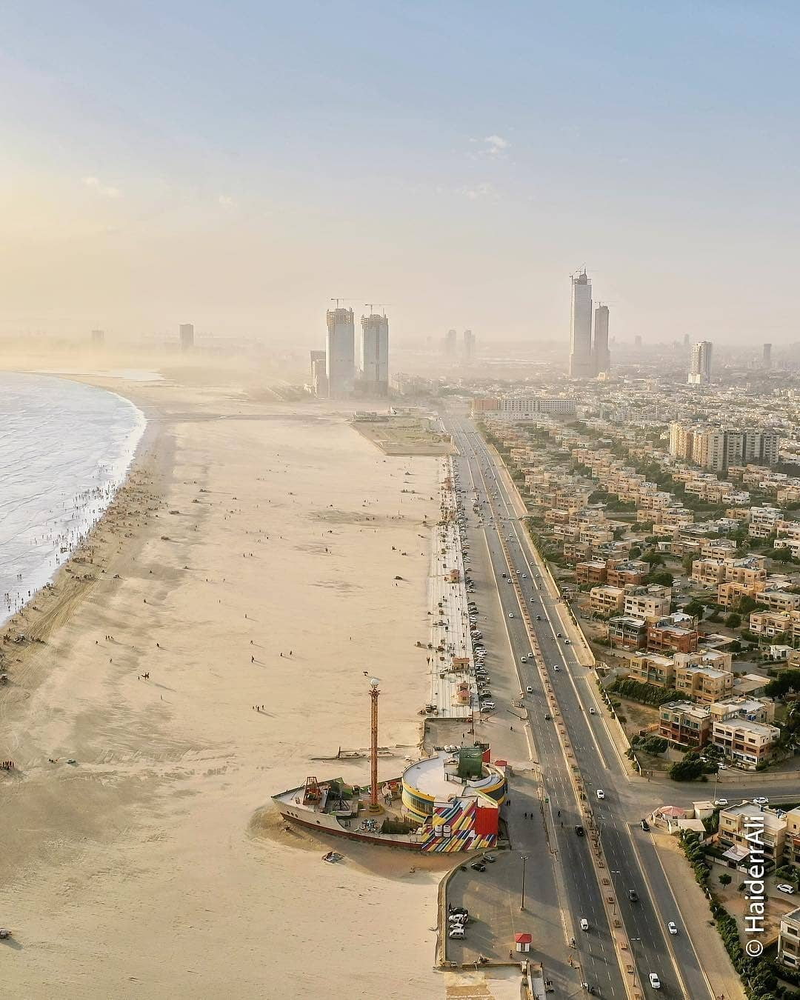

Clifton Beach
Clifton Beach is one of Karachi’s most famous attractions. Visitors enjoy the sea breeze, camel rides, food stalls, and beautiful sunset views along the Arabian Sea.

Mohatta Palace
Mohatta Palace is a historic building that reflects Karachi’s architectural beauty. Today, it is used as a museum and cultural center, attracting tourists and history lovers.
Pakistan Maritime Museum
The Pakistan Maritime Museum presents the naval history of Pakistan through galleries, ship models, submarines, and outdoor exhibits. It is an educational and family-friendly destination.